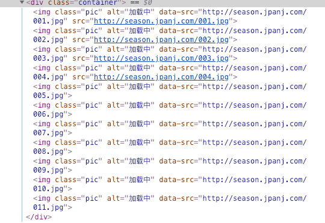
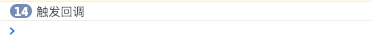

LazyLoad（懒加载），顾名思义，等到需要加载的时候再加载，主要是针对图片加载的优化，目前对页面加载速度来说，影响最大的还是图片。对于图片过多的页面，在图片出现在视野中的时候再加载，未出现在视野内的暂时不加载，这样在页面性能上会有很大的提升。
原理
1 | <img src="default.jpg" data-src="http://season.jpanj.com/001.jpg" /> |
src指向默认图片或loading，设置data-src属性(自定义属性)为真实图片地址，监听滚动事件，当图片到达可视区域时，再将src值替换成data-src的值。
简单实现
1 | <head> |
1 | <script> |
js 实现的关键是判断图片到达可视区域，有两个关键的值：可视区域的高度和元素距离可视区域顶部的距离。当可视区域高度大于等于元素距离可视区域顶部的距离时，说明图片元素出现，需要将图片地址替换成真实的地址。
可视区域的高度：window.innerHeight || document.documentElement.clientHeight。
元素距离可视区域顶部的距离：getBoundingClientRect() 获取元素的尺寸，top属性获取距离顶部的高度。
展示效果
打开控制台可以看出，当img滚动到当前视野范围内时，img的src属性被赋值给真实的图片地址。

上述实现了基本的懒加载功能，但是有个关键点：scroll 事件！如果用户在滚动条到达底部的时候页面未加载出来时，频繁滚动滚动条，那浏览器就会频繁计算是否到达底部，而这种频繁触发事件导致页面大量的计算是特别消耗性能的，会引发页面的抖动甚至卡顿，所以我们需要对此类似的事件例如鼠标事件（mousemove等），键盘事件（keyup、keydown等）进行优化，控制事件被触发的频率。
优化
先引入两个概念：函数节流（throttle）与函数防抖（debounce）。
函数节流
核心思想：某段时间内，不管触发了多少回调，都只执行第一次。
对于上面图片处理则是：在固定的时间间隔内（例如300ms内），不管滚动条触发几次，都只执行第一次触发事件的回调，后面的自动忽略，300ms为一个周期。
实现就是：1
2
3
4
5
6
7
8
9
10
11
12
13
14
15
16
17
18
19// fn是事件回调, interval表示时间间隔
function throttle(fn, interval) {
let last = 0; // 上次触发回调的时间
return function () {
let context = this; // 调用时this上下文
let args = arguments; // 调用时传入的参数
let now = +new Date(); // 触发本次事件的回调
if (now - last >= interval) { // 判断上次触发时间和本次触发时间间隔是否小于规定间隔
last = now;
fn.apply(context, args);
}
}
}
const better_scroll = throttle(lazyload, 300);
document.addEventListener('scroll', better_scroll);
实现效果
打开控制台，在触发回调的时候，会明显看到打印出来的触发信息频率变少。

函数防抖
核心思想：某段时间内，不管触发了多少回调，都只执行最后一次。
可以看到和函数节流的根本区别是：执行回调是以哪次为主。函数防抖典型的应用场景是文本输入的 ajax 验证，判断用户段时间内不输入再去验证，减少请求次数。
1 | function debounce(fn, delay) { |
实现效果
在快速滚动到某个位置后来回滚动滚动条，会发现图片长时间未加载，出现“卡顿”现象。因为用户频繁滚动滚动条，那每次计时器都清零，向后推迟300ms，回调函数就会一直推迟没有反应。
所以函数防抖需要设置一个最小延迟时间，如果时间间隔大于设置的最小时间间隔，则必须触发回调。也就是将函数节流与函数防抖结合起来。1
2
3
4
5
6
7
8
9
10
11
12
13
14
15
16
17
18
19
20
21
22
23
24function throttle(fn, delay) {
let last = 0, timer = null;
return function () {
let context = this;
let args = arguments;
let now = +new Date();
if (now - last < delay) { // 当时间间隔小于设置的时间间隔，则设置一个新的定时器
clearTimeout(timer)
timer = setTimeout(function () {
last = now;
fn.apply(context, args);
}, delay)
} else { // 如果超过，则进行回调
last = now;
fn.apply(context, args);
}
}
}
const better_scroll = throttle(lazyload, 300);
document.addEventListener('scroll', better_scroll);